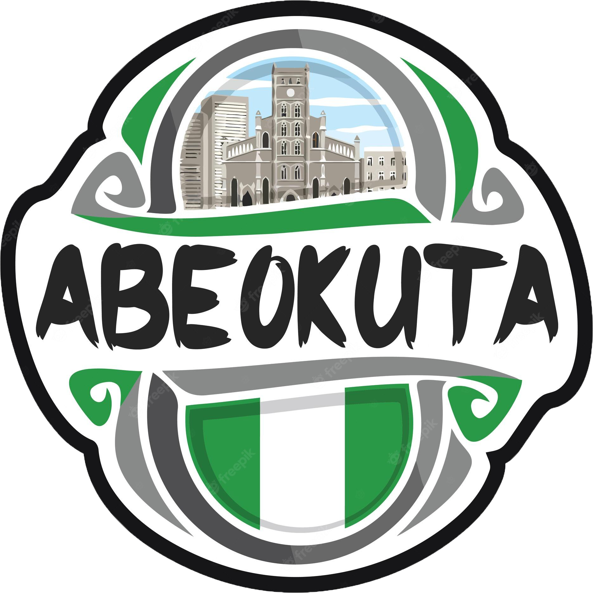
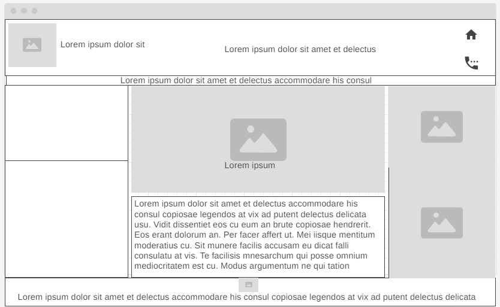

Overview
Purpose
The purpose of this site is to introduce tourists to the fascinating history and significance of Olumo Rock in Abeokuta. Olumo Rock served as a crucial refuge for the old Egba people in 1830 during a turbulent period in their history. Because of its pivotal role in the community's past, the rock has been revered and even deified as a god. It is believed that the rock was benevolently molded by a divine force that also brought an end to the wandering and strife of the people. As a result, annual sacrifices are performed to honor the gods, seeking their protection for climbers and to commemorate Olumo Rock's vital role in the old Egba people's lives.
Audience
The target audience for this website are mainly visitors and tourist who are new to the city of Abeokuta this website would be a guide for them and would make their visit a delight. Having everything they need here on the website like Arts and craft, history of the people of Africa, buy varieties of Africa food, and so on would help them to enjoy their tourism and have fun
Branding
Website Logo
Scenarios
What events will the chamber be holding this month that promote business-to-business networking?
What has been the population growth in the area?
Where can I find contact information for the chamber's board of directors?
Style Guide
Color Schema
Palette URL: https://coolors.co/ffffff-e2e4f6-566246-020202-141498| Primary | Secondary | Accent 1 | Accent 2 |
|---|---|---|---|
| [#5E239D] | [#FFFFFF] | [#141498] | [#566246] |
Typography
Heading Font: Bebas Neue
I choose Bebas Neue as my heading font because it is bold and easy to read.
Paragraph Font: Sansita Swashed
I love sansita swashed because it is stylish, and looking good to use. Very clear and easily readable. Also classy and ideal for the purpose the site is been created
Normal paragraph example
Olumo Rock is situated in the vibrant city of Abeokuta, within Ogun State. Historically, this rock formation served as a natural fortress, offering sanctuary to the Egbas during inter-tribal warfare in the 19th century. It played a crucial role in safeguarding the Egba people when they needed it most, and today, it continues to hold a special place in the hearts of the local community. The locals are known for their warm and friendly hospitality, often offering informal tours of the dyeing areas to curious tourists.
Colored paragraph example
Additionally, visitors can explore and purchase local crafts such as beads, bracelets, sculptures, and traditional musical instruments like the sekere and talking drum.
Navigation
Site Map
Content
Home page
Images for the Home page
- 